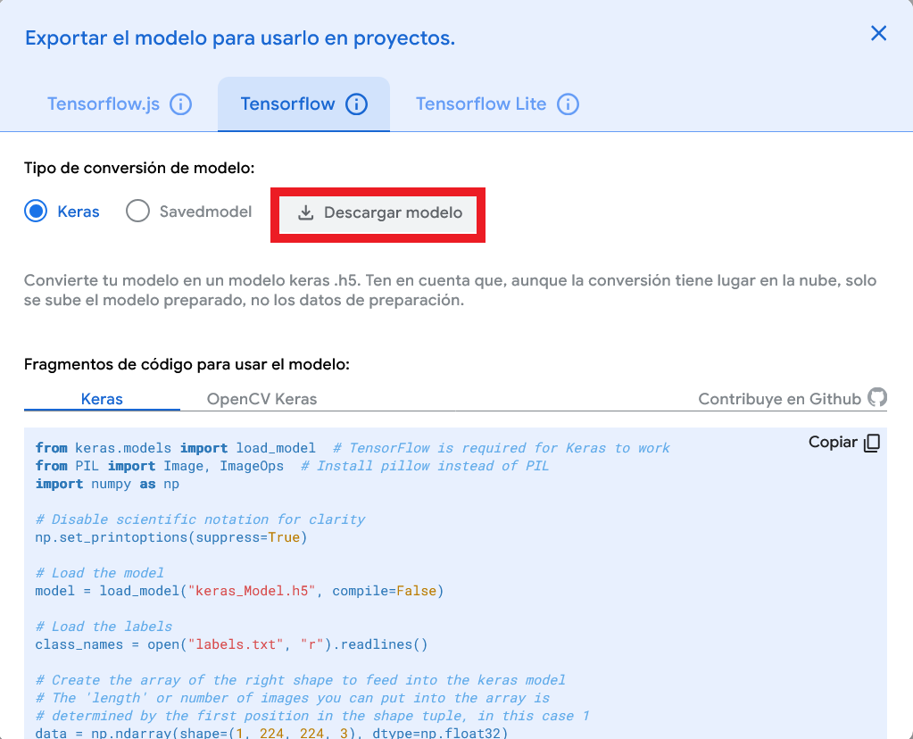

Sprint 4: Del modelo a la aplicación
En el sprint anterior, hemos aprendido a entrena modelos usando Teachable Machine. Hemos ajustado sus hiperparámetros y evaluado su rendimiento usando las gráficas generadas automáticamente por la herramienta.
En este sprint vamos a dar un paso más allá y vamos a construir una aplicación real de Machine Learning en Python para resolver un problema de clasificación de imágenes "Perro/Gato".
En esta primera aproximación low-code, usaremos el modelo entrenado en Teachable Machine y construir la aplicación sobre Google Colab. Nos centraremos en la inferencia haciendo uso de TensorFlow/Keras para cargar el modelo y hacer predicciones.
Sesión 1,2. Fases de inferencia
En esta sección aprederemos las fases de inferencia en un modelo de Machine Learning y cómo implementarlas en Python usando TensorFlow/Keras.
Fase 1. Cargar el modelo
Previamente a exportar el modelo entrenado en Teachable Machine a Python, debemos tener claro algunos conceptos clave.
TensorFlow:
TensorFlow es una biblioteca de código abierto desarrollada por Google que se utiliza para crear, entrenar y desplegar modelos de inteligencia artificial y aprendizaje automático.
Todos los modelos de Teachable Machine están construidos sobre TensorFlow, y por tanto se exportan en formatos compatibles con él.
Formatos de exportación:
- TensorFlow.js → para usar el modelo directamente en una página web.
- TensorFlow Lite → para integrarlo en una aplicación móvil o un microcontrolador.
- TensorFlow (formato estándar Keras o SavedModel) → para usarlo en Python o en proyectos de IA.
En esta fase, exportaremos el modelo en formato TensorFlow estándar Keras. Keras es una biblioteca de alto nivel para el desarrollo de redes neuronales artificiales. En pocas palabras, Keras es una interfaz amigable para construir y entrenar modelos de IA.

Se descargará un archivo comprimido (.zip) que contiene:
- El modelo en formato Keras (.h5).
- El archivo labels.txt con las etiquetas de las clases.
Descomprime el archivo y verifica que tienes ambos archivos. Súbelo a tu Google Drive para que esté accesible desde Google Colab.
Ahora, en Python, usaremos TensorFlow/Keras para cargar el modelo y las etiquetas.
from tensorflow import keras
#Carga el modelo
mi_modelo = keras.models.load_model("keras_model.h5", compile=False)
# Carga las etiquetas de las clases
nombre_clases = open("labels.txt", "r").readlines()
print(nombre_clases)
El parámetro compile=False se usa para evitar que Keras intente compilar el modelo al cargarlo, lo cual no es necesario para la inferencia.
AVISO 👀: Google Colab ha actualizado la librería Keras a la versión 3.0, mientras que Teachable Machine exporta los modelos en formato Keras 2.x. Por tanto, debemos indicar el siguiente parámetro para garantizar la compatibilidad.
import os
# 1. Activamos el modo legacy (Keras 2)
os.environ['TF_USE_LEGACY_KERAS'] = '1'
Fase 2: Adquirir Datos Nuevos
Cargar una imagen (desde un archivo, la webcam, el móvil...).
En esta primera aproximación, usaremos imágenes almacenadas en archivos. Deberás cargar la imagen o imagenes que quieras clasificar a Google Colab.
Para cargar imágenes en Python, usaremos la librería PIL (Python Imaging Library), en concreto la clase Image e ImageOps ('from PIL import Image, ImageOps').
Ahora estamos en disposición de cargar una imagen desde un archivo:
imagen= Image.open("<IMAGE_PATH>").convert("RGB")
<IMAGE_PATH>debe ser la ruta al archivo de imagen que quieres cargar.convert("RGB")se usa para asegurarse de que la imagen está en formato RGB (3 canales de color).
Fase 3: Pre-procesamiento
La imagen DEBE transformarse para ser idéntica a las de entrenamiento.
Esto incluye:
- Cambiar tamaño de la imagen para que tenga al menos 224x224 píxeles y luego se recorta desde el centro.
size = (224, 224)
imagen = ImageOps.fit(imagen, size, Image.Resampling.LANCZOS)
- Normalizar los valores de los píxeles (ej. de [0, 255] a [-1, 1]). Para ello deberemos utilizar la librería Numpy (
ìmport numpy as np)
# Convertimos la imagen en un array NumPy.
imagen_array = np.asarray(imagen)
image_array.shape, saldrá (224,224,3)
Podríamos obtener las dimensiones del array usando: 'print(imagen_array.shape)', el resultado sería (224, 224, 3). Esto indica que tenemos una matriz tridimensional de 224 filas, 224 columnas y en cada celda hay 3 valores (canales RGB).
Para convertir los números enteros de la matriz a un rango entre -1 y +1 que es lo que espera el modelo preentrenado de Teachable Machine, dividiremos el valor de cada celda entre 127.5. Lo que nos generará un valor real entre 0 y 2.
Por último. para desplazar el valor entre -1 y +1, le restaremos -1 a cada valor de la celda.
Debemos tener en cuenta, que image_array inicial contiene valores enteros, por lo que debemos como primer paso antes de ejecutar cualquier operación aplicarle un casting de tipo y convertirlos en numeros reales.
normalizada_imagen_array = (imagen_array.astype(np.float32) / 127.5) - 1
Fase 4: Predicción
Normalmente, las IAs no procesan imágenes "una a una", sino en lotes. Aunque solo tengamos una foto, debemos meterla en un array de 1 hueco. Ese hueco, a su vez, debe contener la imagen pre-procesada.
# Crear un array para un lote de 1 imagen. ndarray = N-Dimensional Array
lote_imagenes = np.ndarray(shape=(1, 224, 224, 3), dtype=np.float32)
lote_imagenes[0] = normalizada_imagen_array
Para clasificar la imagen preprocesada, usamos el método predict() del modelo cargado en la Fase 1 ('mi_modelo').
predict está diseñado para procesar conjuntos de datos a la vez. Por eso, necesita recibir una lista (un lote), aunque esa lista solo tenga un elemento (la foto en la posición 0).
resultados= mi_modelo.predict(lote_imagenes)
La función predict devuelve por cada elemento que contiene 'lote_imagenes' un array de números que representan la probabilidad de que la imagen pertenezca a cada clase. En nuestro caso, al tener dos clases y solo una imagen resultados tendrá la forma [[0.98, 0.02]].
Fase 5: Post-procesamiento
En esta fase se busca el índice del número más alto en el array devuelto por el modelo (en [0.98, 0.02] sería el índice 0). Se usa el índice para buscar en la lista de etiquetas (labels.txt) y se muestra la etiqueta correspondiente (ej. "Perro").
Para ello, usaremos la función argmax() de Numpy. Esta función devuelve el índice que ocupa el valor máximo en un array.
indice = np.argmax(resultados[0])
Con este índice, podemos obtener la etiqueta correspondiente de la lista de etiquetas cargada en la Fase 1.
etiqueta = nombre_clases[indice]
print("La imagen es de clase: ", etiqueta)
probabilidad = resultados[0][indice]
print("Con una probabilidad de: ", probabilidad)
A106.1 Exportación de un modelo desde Teachable Machine
Siguiendo los pasos anteriores, crea un cuaderno de Google Colab que implemente las fases de inferencia para el modelo entrenado en Teachable Machine. Recuerda seleccionar el entorno de ejecución con GPU.
Indica en Google Colab todos los pasos realizados y comenta el código para explicar cada fase.
Para cargar el modelo de la fase 1, es recomendable subir el modelo y las imágenes de testeo al Drive descomprimido, y montar el drive en Google Colab. Seleccionar el archivo y copiar la ruta desde el menú contextual.
Sesión 3,4: Evaluación en lote
En esta sección, evaluaremos el rendimiento del modelo en un conjunto de datos de prueba. El objetivo es automatizar la inferencia para todas las imagenes que se encuentren en una carpeta y generar como salida un informe con las predicciones realizadas.
Preparación del Lote y refactorizar el codigo (1ª parte)
- En Google Drive, debemos tener una carpeta
testque contiene las imágenes de prueba. - Vamos a crear una variable que contenga un array con el nombre de cada imagen de prueba. Para ello, usaremos la librería
osde Python.
lista_archivos = os.listdir("<TEST_CARPETA_PATH>")
Si imprimimos lista_archivos, veremos que contiene el nombre de cada imagen en la carpeta de prueba print(lista_archivos).
- Vamos a inicializar contadores para llevar la cuenta de aciertos y errores.
total_predicciones = 0
aciertos = 0
media_probabilidad_aciertos = 0.0
# predicciones incorrectas contendrá una lista con los nombres de las imágenes mal clasificadas
predicciones_incorrectas = []
lista_archivos y para cada imagen, ejecutar las fases de inferencia vistas en la sección anterior.
```python for nombre_archivo in lista_archivos: if cat in nombre_archivo: etiqueta_esperada = "gato" elif dog in nombre_archivo: etiqueta_esperada = "perro" else: continue # Saltar archivos que no sean de gatos o perros
total_predicciones += 1
ruta_imagen = os.path.join("<TEST_CARPETA_PATH>", nombre_archivo)
# Aquí obtendriamos la predicción del modelo llamando a una función que
# implemente las fases de inferencia
etiqueta_predicha, probabilidad = predecir_imagen(ruta_imagen)
if etiqueta_predicha == etiqueta_esperada:
aciertos += 1
media_probabilidad_aciertos += probabilidad
else:
info_error= {"archivo": nombre_archivo, "prediccion": etiqueta_predicha,
"probabilidad": probabilidad}
predicciones_incorrectas.append(info_error)